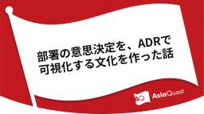

企業テックブログRSS
フィード
人気フィード
ブログ一覧
[公開中] AQ Tech Blog
https://techblog.asia-quest.jp
アジアクエスト株式会社エンジニアによるテックブログです。
フィード

部署の意思決定を、ADRで可視化する文化を作った話
[公開中] AQ Tech Blog
1日前
エージェントベースでのAzure Migrate（プライベートエンドポイント＆プロキシ経由）
[公開中] AQ Tech Blog
11日前
Amazon ComprehendとOpenSearchで感情分析結果をグラフ化してみた
[公開中] AQ Tech Blog
はじめに クラウドインテグレーション部の池口です。
16日前
FAISSとAmazon Bedrockを使ったベクトル検索の実装
[公開中] AQ Tech Blog
本記事はアジアクエスト Advent Calendar 2024の記事です。 概要
16日前
Entra Connect でハードマッチを構成する
[公開中] AQ Tech Blog
本記事はアジアクエスト Advent Calendar 2024の記事です。
16日前
シェルスクリプトとcronでAWSCloudWatchにメモリ使用量を送信する方法
[公開中] AQ Tech Blog
本記事はアジアクエスト Advent Calendar 2024の記事です。
16日前
Entra Connect からクラウド同期への移行
[公開中] AQ Tech Blog
18日前
Entra クラウド同期について詳しく見てみる
[公開中] AQ Tech Blog
22日前
Shopifyとは？初めての方に送るプラットフォームの全体像
[公開中] AQ Tech Blog
1ヶ月前
Slackチャンネル作成時の誤招待を防止！kickflow×Zapierによる自動化フローの構築事例
[公開中] AQ Tech Blog
はじめに こんにちは、情報システム部の丸山です。
2ヶ月前